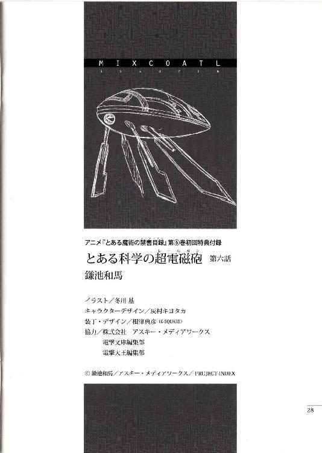
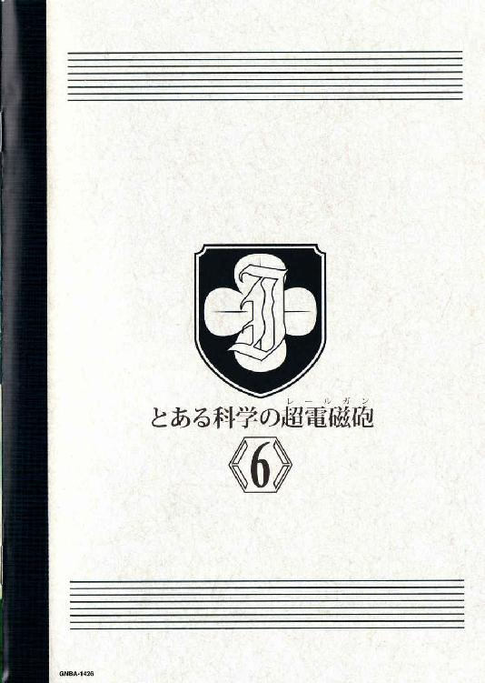

| [鎌池和馬] とある科学の超電磁砲6 | |
| 鎌池和馬 | |
| (2015) | |
|
アニメ『とある魔術の禁書目録』
第⑥巻初回特典付録
|
とある科学の超電磁砲

第六話
混乱は夜まで続いた。
佐天涙子は現在も、ホテルの一室で眠っている。
ミサイルの爆発のあった海岸沿いの岩場で、佐天は発見された。大量の海水を飲んでいたらしい彼女は、やってきた美琴や初春の顔を見るとそこで安心してしまったのか、ふっと気を失ってしまったのだ。
白井黒子の空間移動を使ってどうにかホテルまで戻ってきたが、こちらも正常に機能しているとは言い難かった。別に『雲海の蛇』のミサイルがホテルに直撃した訳ではないのだが、路上でパ二ックになっていた人達が、『とにかく屋根のある場所へ避難したい』という一心で押し寄せてしまったために、ホテルの人的許容量を突破してしまったのだ。よほど多くの人達が一斉に向かってきたのか、出入り口は機能を失い、ガラス製の自動ドアは粉々に砕けていた。
誰もが惨劇に気づいている。
これが単なるアトラクションではなく、本当に人の命を奪いかねないものだと理解している。そのせいか、目に見えない雰囲気のようなものまで不快なものに変質しつつあった。
美琴、白井、初春の三人は、佐天の眠る客室に集合していた。
ホテルがいつまで営業していられるか分からないし、これだけ人が集まると、建物の中で混乱が起こるリスクも出てくる。いざという時に離れ離れになるのは得策ではないと判断したのだ。
「ひどい事になってるわね......」
美琴はポツリと呟いた。
昨日まで窓の向こうに広がっていた夜景はもうない。ライトアップの途切れた闇は、夜の海が本来持っている不気味さを際立たせている。その上、暗闇のあちこちには、今も炎のオレンジ色が点々と浮かび上がっていた。
どうやら『雲海の蛇』は公共交通機関や学芸都市の戦闘機用の飛行場などを集中的に狙ったらしく、これだけの騒ぎであっても、ミサイルの直撃を受けて死亡した人はいないらしい。ただし、連動して起きた騒動によって、重軽傷を負ってしまった人が出ているらしいのだが。
（......ったく、修学旅行みたいな感覚で、バカンスを楽しもうって思ってたのに。どうしてこんな戦争みたいな状況に巻き込まれんのよ）
思わず美琴は歯噛みする。
そんな彼女の耳に、別の少女の声が届く。
「元々、アトラクションショーでお茶を濁すような人達ですから信憑性には疑問がありますが、今回の騒ぎで学芸都市側も『ショー』の体裁を整える余裕もなかったみたいですね」
ＩＣカードのチャージ機械を通して、ネットワークから情報を入手していた初春飾利がそんな事を言った。
「しかし、妙ですわね」
備え付けの冷蔵庫から果物を取り出しながら、白井黒子は言う。
「ここまで有利に攻め込んでおきながら、一定の破壊だけを確認して立ち去るなんて。わたくしなら、相手に準備を整えさせる時間を与えず、このまま一気に叩き潰しますけど」
「白井さんっ！」
初春が悲鳴のような声で抗議したが、美琴としても白井と同意見だ。これがゲームや試合ではなく、本物の殺し合いである以上、フェアな精神に則る必要はどこにもない。
となると、
「『雲海の蛇』を操る連中の目的は、単に学芸都市を破壊する事ではなかったとか？」
「あるいは、本当の破壊目標を発見する事ができず、補給のために泣く泣く一度引き返したとかですかしらね」
美琴はさらに意見を言いかけて、呑み込んだ。
その可能性は低いと思うし、仮にそんな可能性があったとしたら、もっと早い段階で壊滅的な危機は訪れているだろうから、だ。
それは、
（......連中はすでに圧倒的な戦力を保有していて、決着をつけようと思えばいつでもつけられるから、とか）
「そんな訳ないか」
「？」
思わず呟くと、白井と初春は揃って首を傾げた。
『雲海の蛇』が引き返した事で、街の混乱は収まりつつある。しかしそうなると、不満が噴出するのが人間だ。別にホテルマンが悪い事をした訳ではないのに、多くの人間が───下手をするとホテルの宿泊客でもない人間まで───フロントに殺到し、あるいは通路を歩くボーイを捕まえ、ほとんど八つ当たりのように、手当たり次第に噛みついている。
不幸中の幸いなのか、相手がそれを狙ったのか、現状では死人は出ていない。しかし怪我人もゼロではない。それがピリピリした空気に拍車をかけている。
いつまた『雲海の蛇』がやってくるか分からない。おまけに海底トンネルやヘリポートは破壊され、学芸都巾から外へ逃げる事もできない。この状況で冷静になれというのは難しいだろうが、ちょっとした叫び声一つで大混乱が巻き起こりかねないこの空気は、居心地が悪い事この上ない。
「......やっば、ルームサービスを頼んでおいて正解だったみたいね」
美琴はポツリと呟いた。
やや疲れた様子のボーイに多めのチップを弾んで元気づけると、美琴達は佐天の客室に集まったまま、少し遅めの夕食を採る事にする。
「混乱自体は、直接的な原因であるトビウオがいなくなったんですから、時間が経てば収まるとは思うんですが」
「明日もトビウオがやってこなければ、ですけれどね」
「......白井さん」
彼女達が頼んだのは、羊の肉を軸とした簡単なディナーだった。味は悪くないのだが、ルームサービス用のワゴンに乗せられる量は限られているので、どうしてもコンパクトにまとめられている印象がある。
と、食べ物の匂いにつられたのか、今まで身じろぎ一つしないで眠っていた佐天が、ベッドの上でもぞもぞと動いた。ゆっくりとまぶたを開けた彼女は、まるで寝起きの子供のようにもたもたした動作で上半身を起こす。
「さっ、佐天さん！ 大丈夫ですか？ どこか痛い所とかありませんか？」
「いや、特に何もないけど。......ん、なんか美味そうなの食ってるじゃん初春」
「た、食べさせてあげても良いんでしょうか？結構重たそうですけど」
初春は助けを求めるように、美琴の方を見た。
「まずはこっちのサラダを食べてみて、胃が受け付けないとか、そういう事がなければお肉の方へ、って感じかしらね」
「初春、ちょっとこっちに来なさい。三人分しか頼んでいませんから、全員のを再シャッフルして四人前に仕上げますわよ」
と、こっそり美琴の皿の料理だけを自分の皿に移し換えようとする白井にビリビリが襲いかかり、改めて公平に分配していく事に。
そんなこんなで晩ご飯を食べ終えると、佐天はこれまであった事を話し始めた。
「......昼間、変な女の子と会ったんだけど......」
佐天の口がゆっくりと動き、彼女は一つ一つの説明をする。
ショチトルという少女に出会った事。彼女が『雲海の蛇』を操る側の人間だった事。彼女が本当に悪人なのかを調べるために、学芸都市の暗部へ潜り込んだ事。そこで係員に見つかり、海難事故を装って殺されかけた事。最後に、ショチトルが『雲海の蛇』を使って、佐天を助けに来てくれた事。
話の途中で美琴は佐天の頭にゲンコツを落とし、白井も佐天の頭にゲンコツを落とし、最後には初春までも佐天の頭にゲンコツを落とした。彼女の通ってきた道は、もはや冒険ですらない。ロシアンルーレットで五回連続で引き金を引いたけど、たまたま一発も出なかったよ。そんな話を聞かされたようなものだ。
あうう......と頭のてっぺんを両手で押さえて涙目になっている佐天は、ふとこう言った。
「そういえば、学芸都市の教命艇って、どういう事なんだろう？」
「？」
「ええと、別れ際に、ショチトルって女の子が言ったんです。もうすぐ、シウ......コア、トル......とかいうのが来るって。詳しい話は教えてくれなくって。うーんと、これまでとは違うヤツって感じの口ぶりだったような？で、そいつがやってくる的に救命艇を使って逃げろって。なんか、どういう理屈を使っているのかはサッパリですけど、学芸都市にはでっかい救命艇があって、一〇〇万人の観光客を全員乗せられるって話だったんですけど」
「シウコアトル？」
美琴は首を傾げた。確かトビウオの名前は『雲海の蛇』。まだ何か変な機体を保有しているという事だろうか。
「それにしても、一〇〇万人分の救命艇というのは、またスケールの大きな話ですわね」
「もしかして、これの事じゃないでしょうか？」
と言ったのは、ＩＣカードのチャージ機械の前にいる初春だ。画面にはいくつかのウィンドウが開いている。
「学芸都市の海岸一二か所に二〇〇メートルクラスの高浮力式船舶が格納されています。定員は、一隻あたり八万人前後だとか」
「......ちょっと、そんなにたくさんの人って乗せられる訳？」
「まあ、ゆったりした豪華客船と違って、あくまで救命艇ですから。一人一人のスペースは寝袋ぐらいしかないみたいです。で、この寝袋状のスペース自体も独立したボートとして機能するようですけど」
「こんな所にいると忘れますけど、ここは米国本土から五〇キロも離れているんですものね。単に海に浮かべば助かるなんて話ではありませんのね」
周り一面に海水が広がっているのに、一滴も水分を補給できないまま干上がっていく。想像するに恐ろしいその光景を回避するために用意されたのが、この超大型救命艇なのだろう。
「船自体は専門的な知識がなくても、ＧＰＳ制御で暗礁や他の船を自動で回避しながら、米国木土へ向かえるそうです。ただ、これもやはり救命艇としての仕事をまっとうするだけですので、港での細かい停船作業は行えず、陸地近くまで接近して、そこから先は救助隊に助けてもらうって感じらしいですけど」
大型救命艇の名称はサーモンレッド。どうやら内部に乗員のいる小型のボートを大量に抱え込んだ格好が、卵を抱えたシャケのように見えるから、という事らしい。
ナメたセンスだ、と美琴は呆れたが、今はそんな所に文句を言っている場合ではない。
初春は画面に目をやりながら、こんな事を言った。
「学芸都市の周辺海域は、映画撮影時の名残で『五〇年後の動植物の環境』が整えられています。海域の中と外で魚などを行き来させないために生物ガードという網のようなもので覆われているんですが、サーモンレッドを動かすと、この生物ガードを引き千切る必要が出てくるらしいんです。その辺りも、滅多に動かせない理由の一つになっているみたいですけど」
美琴は初春の肩越しに、チャージ機械の画面に目をやりながら、
「......とりあえず、『雲海の蛇』の連中がもう一回攻め込んできたとしても、この救命艇があれば最悪、街と一緒にみんな沈められて、全滅するとかっていう話はなくなるのかしら」
「どうでしょう......？」
初春は困ったような顔で、
「このネットワーク内の情報だけで完璧に判断するのは難しいですが......。現状、得られるデータによると、戦闘機用の滑走路を含めて、学芸都市の防衛性能は二〇％以下まで削ぎ落とされています。普通は、こんな状態になったら救助を優先すると思います。にも拘らず、係員の方ではサーモンレッドの慣らし運転などを行おうとしている様子はないんです」
「あくまでも、ここで戦おうって腹ですわね」
佐天の話によると、ここでは何らかの実験・研究が行われているらしい。そちらの関係でここから動けないのか、あるいは無防備な救命艇に研究成果を乗せては、海上を戦闘機並みの速度で高速移動する『雲海の蛇』に弱点をさらすだけだと判断しているのか。
あの『雲海の蛇』の連中の思惑は不明だが、このまま終わるとは思えない。その上、ショチトルとかいう少女が言うには、シウコアトルという厄介なものまで戦線に投入される恐れすら出ているらしい。
今まで拮抗していた学芸都市と『雲海の蛇』だが、昼間、彼らに本格的な侵入を許した事で、戦況は大きく動いてしまった。このままラヴィーゼ飛行隊に任せていても、学芸都市は破壊されるだけだ。
となると、
（やるべき事は見えてきたって訳か）
結論は簡単だ。
御坂美琴は、どちらの味方でもない。
佐天の話を間くとついショチトルの方をひいきしたくなるが......そもそも、学芸都市にしても『雲海の蛇』にしても、根本的に『人を傷つけ、殺す事もいとわない組織』である事に変わりはないのだ。
従って、美琴がやるべきなのは、どちらか一方に肩入れするのではなく、双方の組織の間を立ち回って、犠牲を出さずにこの問題を収拾させる事だ。
ここに来ている普通の観光客の人達は、本当にただ巻き込まれただけなのだから。
（最悪......二つの集団と同時に戦う羽目になるかもしれないわね）
『雲海の蛇』の連中にも超電磁砲の一発でもお見舞いしてやりたいが、そういった実力行使に訴えるにしても、まずは学芸都市で立ち往生している人達を逃がしてやって、思いっきり暴れるための戦場を確保してからだ。
美琴は初春に尋ねた。
「とにかく、学芸都市に留まってんのはヤバいんでしょ。『係員』の連中が自発的に動かないなら、私達の手で観光客達を大型救命艇サーモンレッドに誘導させたりはできないものかしら」
「......難しいですね。このサーモンレッド自体が、学芸都市の機密情報に含まれているんです。安全で快適な映画の街、というアピールをするために、『いざという時の救命艇』をあまり表に出したくないそうで」
「機密区画にある、存在しないはずの大型救命艇へ人々を連れ込もうとすれば、『係員』達がどういう手段に出てくるか。下手すると、立入禁止のラインを割った途端に水平射撃されるかもしれませんわね」
「......となると、やっぱ『係員』の連中に任せきりって訳にも行かないか。連中が動くのを期待していたら、島が破壊されるまで待たされるかもしれないわね」
現状を鑑みれば、学芸都巾の人達をサーモンレッドに乗せた方が良い。
昼間の襲撃では死人は出なかった。しかしそこに必然性はない。次の襲撃では死人が出るかもしれない。学芸都市の防衛網がダメージを受けた以上、今度はさらに苛烈な攻撃がやってくるだろうから。
ただし、『係員』達が妨害するため、観光客達を簡単に大型救命艇へ誘導させる事はできない。
（どうする......？）
サンダルのストラップに挟んだ、超電磁砲用のコインホルダーに目をやる美琴。
学芸都市の『係員』達を制圧して、サーモンレッドを始動できる状態にする。思わずそんな大雑把な考えに囚われてしまうが、美琴は首を横に振った。『雲海の蛇』の連中がダメージを与えたおかげで何だか学芸都市が弱く見えているような気がしないでもないが、あれはあくまでも『組織』と『組織』がぶつかり合ったからこその結果だ。美琴という『個人』と『組織』が激突して、同じ結果が得られるとは限らない。
総合的な戦力の大小という問題ではない。
例えば、大型救命艇サーモンレッドは学芸都市の外周に一二隻停泊している。このドックを一つずつ美琴が制圧していくのは、おそらく無理だ。複数のブロックで構成され、全体で直径一〇キロ前後もの広さを誇る学芸都市の外周をぐるりと回るだけでも息切れするし、各ドックにどれほどの『係員』が待機しているか分かったものではない。仮に一つのドックを制圧した所で、他のドックに攻め込んでいる間に、別の『係員』達が補充されてしまったら元も子もない。
（......どっかに一発潰せば全部制圧できるような核があれば良いんだけど、そんなに都合良く話は進まないわよね）
街の不良集団を蹴散らすのとは規模が違う。
やはり、単純に両腕を振り回して暴れるだけで全部解決する事はない。
と、
その時だった。
「わっ？」
初春の叫びが聞こえた。
突然、美琴達のいる客室が停電したのだ。
真っ暗になる室内。当然ながら、初春の操っていたＩＣカードのチャージ機械の電源も落ち、光らしい光が全部なくなってしまう。
「ッ!!」
美琴はとっさに窓の外へ目をやる。
ライトアップもまばらで、オレンジ色の火の手すらある暗がりだが、ブロック全体の電気が消えている建物はない。ポツポツと、歯が欠けたように建物の明かりが見える。
このホテル、いや、この客室だけが突発的に電源を落とされた。
まるで、コンピュータの接続を強制的に断ち切るように。
（こんなタイミングで......ッ!!）
美琴はとっさに、シルエットだけで判別できる佐天の体を突き飛ばし、チャージ機械の前に座っている初春を床へ引きずり降ろしながら、叫ぶ。
「気づかれたわ!! 伏せて!!」
言葉と同時だった。
敵は映画のように、わざとらしくロープで窓から飛び込んできたりはしなかった。
横合いの壁。
向こう側に直接爆薬でも貼り付けていたのか、轟音と共に客室一面の壁がガラスのように砕けて吹き飛ばされた。
黒子、と美琴は叫んだ。
砕けた壁の向こうから、複数のライフルの銃口が突き出される。警告も威嚇もなし。それを構えた男達は、部屋の中にいる全ての人影に狙いを定め、そして躊躇なく引き金を引く。
だが、
その寸前。
ズォ!! という凄まじい音と共に、客室の天井がシャッターのように崩れ落ちてきた。それは美琴が磁力を使って、鉄筋や金属ダクトなどを強引に動かしたせいだ。ドタタタタッ!!という銃声に身をすくませながらも、大量の建材を盾にした美琴は、前髪から雷撃の槍を射出。爆薬で吹き飛ばされた壁の向こうにいた襲撃者達を一発ずつ丁寧に薙ぎ払う。
（クソッ!! こいつらの上層部は私を『殺すな』って命令していたんじゃなかったっけ!?）
内心で毒づくが、学芸都市に関わる環境は激変している。この街の上層部───『経営陣』は方針を変えたのかもしれない。
しかし、そんな事に文句を言っても意味はない。
美琴は暗がりの中、小声で名前を呼ぶ。
「（......初春さん！ 佐天さんも!!）」
この客室は停電状態だが、崩れた壁や天井からは光が漏れている。返事はなかったが、瓦礫の欠片が散らばる床の上で、もぞもぞと蠢く二つの人影を発見した。
とりあえず、二人は無事。
（黒子のヤツは......ッ!?）
美琴が瓦礫の陰に隠れたまま、周囲を細かく見回して白井の方を確認しようとするが、
ヒュン、という音が聞こえた。
その時、美琴は自分で崩した天井の瓦礫に身を隠していた。山のようになった瓦礫は彼女の腰ぐらいまでの高さしかなく、彼女は床に屈むような格好をしていたのだ。
そこへ。
何かが美琴の喉元へ迫った。それが非金属製のウォーピックで、ウォーピックとは片手で扱える戦闘用のツルハシのようなもので、その切っ先が迫るからには握っている人物がいて、その人物は瓦礫の山を横から高速に回り込んで......と、目の前で起こった現象を逆回しに確認してしまうほど、素早く滑らかな動きだった。
何者かが、自分を殺そうとしている。
その単純な事実に気づいた途端、美琴はようやく動いた。
「ッ!!」
屈んだ体勢のまま、とっさに身をひねる美琴。真っ直ぐ迫るウォーピックは美琴の首の皮を薄く裂き、背後にあった瓦礫の隙間に突き剌さる。しかし、無理に回避した美琴の体は仰向けに転がってしまった。
襲撃者は障害物に剌さったウォーピックを無視して、腰の後ろへ手を回す。
そこからさらに非金属製のナイフを抜いた襲撃者は、そのまま倒れた美琴の鼻の頂点へ、勢い良く刃物を振り下ろす。
しかし、そこでバヂィ!! という凄まじい轟音が炸裂した。
美琴の前髪から高圧電流が放たれたのだ。
吹き飛ばされる襲撃者を見て、美琴は思わず安堵の息を吐く。
「そうだ、黒子は......」
「こちらですわよ」
声は、ボロボロになった客室のドアの方からだ。何故か施錠してあるはずのドアが、外側からあっけなく開かれる。そこから中に入ってきた白井の両手には、ぐったりした男達が引きずられていた。
「待機していた第二陣を潰してきましたの。どうやら、初春のハッキングがバレたせいで、余計なものを呼んでしまったみたいですわね。いくら腕があるとはいえ、長時間アクセスしすぎですのよ」
うう、という初春の声が暗がりから聞こえる。
直前に美琴が床に倒したせいか、初春も佐天も、目立った怪我はないようだった。とりあえず周辺の『係員』達の有無は白井が空間移動を使って確かめてきたようだが、いつ増援がやってくるか分からない。とにかくここを離れよう、と考える美琴だったが、
「......まったく、厄介な連中が現れてくれたものですね」
ふと、暗がりの中で、彼女達とは違う声が聞こえた。先ほどウォーピックを使って美琴に襲いかかった襲撃者が吹っ飛んでいった方からだ。美琴に緊張が走り、佐天がビクリと震える。聞き覚えのある女性の声だったのだ。
「ただでさえ、我々は邪悪な敵と戦っているというのに。その上、学芸都市の内側にもあなた達のような人間が入ってくるとは......」
競泳水着の上から救命胴衣を着ていた、あの女性の『係員』だ。
オリーブ＝ホリデイ。
改めて暗がりで目を凝らすと、ズタズタに裂かれたベッドにもたれかかるオリーブの体のあちこちには、痛々しく包帯が巻いてあった。佐天の話によると、『雲海の蛇」からミサイル攻撃を受けて、瓦礫の中に沈んでいったという事だったのだが......。
「邪悪な敵ですって......」
ポツリと呟いたのは、佐天涙子だった。
わなわなと震える彼女は、その小さな両手を固く握り締めて、オリーブを睨みつける。
「ショチトル達へ勝手にちょっかい出して、私達の知らない所でおかしな事を繰り返して、それがバレそうになったらこんな風に何度も何度も暴力で解決しようとして!!どっちが邪悪だっつうんだよ!!」
「それが、財界の警察というものなんですよ」
真正面からの怒りを受けても、オリーブの表情は変わらない。
あちこちの包帯から、赤いものが滲み出てくる。
「我々は、今この瞬間だけ、世界を守っていれば良いという訳ではありません。一〇年先も、一〇〇年先も、世界中で起こる様々な危機に対応しなくてはならないんです」
「それが、そんなのが、隠れてコソコソ超能力の研究するのとどう関係してんのよ!!」
佐天は叫ぶ。
実際に、ショチトル達の使っている『力』は超能力とは違うような気もするが、少なくとも学芸都市の連中はそういう風に判断し、そこから何かを得ようとしているのだ。
「日本の学園都市ですよ」
「......まさかと思うけど、私達が武力を使った世界征服を企んでいるなんて言い出さないでしょうね？」
美琴はそう釘を剌したが、オリーブは首を横に振った。
「あなた達は、そんな幼稚な事は考えないでしょう」
しかし、とオリーブは続けてこう言った。
「日本の学園都市は、科学技術が二、三〇年ほど進んだ場所と言われています。分かりますか？たった二、三〇年なんです。近い将来、世界中がああなってしまうかもしれないんですよ」
「......、」
「超能力だって、例外ではありません。学園都市の中だけでも、七人もの超能力者が現れているんでしょう。それが世界全人類、六〇億人を上回る人々に広がったら、どれだけの数の怪物が野に放たれると思いますか？単に銃や兵器の流通を監視するだけでは掌握のできない、全く新しい戦乱の時代が幕を開けるとは思いませんか？」
実際には、超能力者とはそんなに単純なものではない。統計上のパーセンテージで才能を算出できるものではない。しかし、それをオリーブに説明した所で、おそらくは納得しないだろう。実感できるのは、リアルに『超能力』に触れている、美琴達だけだ。
だが、二、三〇年後の未来には、確かに強能力程度の力なら、珍しいものではなくなっているかもしれない。
未来の事なんて分からない。
大昔の人達は、コンビニなんて知らないだろう。携帯電話なんて想像もしなかっただろう。だけど、今では誰もが当たり前に使っている。それが当然という世界になってしまっている。
ならば、
「我々には、世界の警察という役割があります」
オリーブは誇らしげな調子で、そう言った。
「そんな我々は、時代の流れに取り残されてはならないのです。我々が舵取りに失敗する事は、世界中に無用な混乱を誘発させてしまう事を意味しています。これまでかろうじて押さえられていた各種の問題が、一気に紛争として噴出してしまうのですからね」
新しい時代の、新しい危機。
超能力のある世界での、これまでになかった問題。
世界の警察として、今後もそれらと戦うための礎。自分達とは直接的に関係のない国や地域のためにも率先して戦い、平和を守るために死地へ向かう。
そこまで考えて、美琴は笑った。
あまりにもつまらない考えに、思わず笑ってしまった。
「理由になってないわね」
その言葉に、オリーブは美琴の顔を見た。
構わずに美琴は言った。
「そんなもんは、人をさらったり、邪魔な人間を襲撃したり、佐天さんの口を封じようとするような理由にはならない」
「必要な事なんですよ......」
オリーブは、美琴の言葉を聞いて鼻で笑った。
「これからも、我々が世界の警察として君臨し続けるためには、仕方のない事なのです」
「ふざけんじゃないわよ」
バヂッ、という音が聞こえた。
美琴の前髪から、青白い火花が散る音だった。
「こんな事を続けてほしいなんて、別にアンタらに頼んじゃいない。世界中の人達は、それぞれの世界できちんと戦ってる。そんな事も分からなくなってるから、こんな風にブルドーザーで全部ぶっ壊しちゃうようなやり方になっちゃうのよ!!」
言葉を放つごとに、美琴の語気は強くなっていく。
溜め込んでいた内心の怒りが、外へと放出される。
「超能力の開発がしたけりゃ勝手にやってりゃ良いでしょ!!学園都市よりももっと優れた、本当に完璧な開発機関を作ってりゃ良いのよ!!それが、何で、こんな事になってんのよ？一刻も早く問題を解決するんじゃない。目の前に迫る問題を利用して、何でもかんでも都合の悪いものをコソコソ隠して、世界の頂点に君臨したがるような組織になっちまってんのよ？」
白井と、初春と、佐天の三人は、美琴の言葉に思わず目を逸らした。
学園都市第三位の超能力者。
彼女の言葉は、単なる係員のオリーブに対する文句だけではないのだろう。
ちっぽけな子供が大人の財界に向けて放つ、願いのようなものだったのかもしれない。
「確かに、日本の学園都市だって完全にクリーンな組織じゃない。能力者が事件を起こす事だってある。だけど、本来、能力者っていうのは別に災いの種なんかじゃない!!そんな風に、先手を打って封じられなきゃいけないような存在じゃない!!機密保持のために一般人を巻き込んで問題を解決しなくちゃならないようなものじゃない!!」
そこまで叫んで、美琴は語気を弱めた。
ギリギリと両手に力を込めながら、それでもゆっくりと、彼女は言う。
「それぐらい、分かりなさいよ......。暴力以外の方法でも何とかできるって事ぐらい、自分の頭で考えなさいよ」
「......、」
オリーブの唇が、わずかに動いた。
しかし、そこから出てきた言葉は、美琴が期待していたものとは追っていた。
「状況は......変わりました」
掠れるような言葉。
しかしそこからは、揺らぐものが感じられない。
美琴の言葉など、届かない。
「我々は、襲われています。もう、迎撃部隊を使ってあしらえるような事態ではなくなったんです。次はどちらが倒れるか、誰にも予測のできないほどに深刻になっているんです......」
それは、美琴達が薄々勘付いていた事を裏付ける言葉だった。
学芸都市は、本当に危ないのだ。
「綺麗事を言っているだけでは、島ごと破壊されてしまうんですよ」
よほどダメージがかさんでいたのか、オリーブの体がぐらりと揺れた。ベッドにもたれていた『係員』が、そのままゆっくりと床へ崩れていく。彼女は最後まで笑っていた。美琴の言葉に、一度も頷く事はなかった。
美琴はやりきれない思いで、オリーブの顔を見下ろしていた。
「......、」
以前、オリーブ＝ホリデイはこう言っていた。この街は『係員』の本拠地であり、襲撃が必要だと感じた場合はそれを成功させる材料を全て用意できると。しかし実際に襲撃は失敗している。つまり、今の学芸都市は完璧ではないのだろう。
美琴はそれに救われたが、楽観はできない。
学芸都市が弱体化しているという事は、『雲海の蛇』の猛威を退ける術も失われつつあるという事なのだから。
戦える人間は限られている。
そして御坂美琴は、日本の超能力開発機関・学園都市の中でも七人しかいない超能力者の一人だ。
しばらく動きを止めていた美琴は、やがて迷いを振り切るように、客室の出ロヘ向かう。
呆然としていた佐天が、その背中に向かって慌てて言った。
「どっ、どこへ行くんですか？」
「大型救命艇よ。何とかしてくる」
美琴はそれだけ呟くと、客室から出て行った。
いくら施設の大半を破壊されたと言っても、まだまだ大勢の『係員』がいるだろう。それら全てを片っ端から薙ぎ払う訳にはいかない。いくら何でも、数が多すぎる。
ただし、『係員』の方にしても、余計な消耗はしたくないはずだ。何しろ『雲海の蛇』の連中は絶対に来る。現状でも満足に戦えるか分からないのに、これ以上戦力を削ぎ落とされれば、本命の敵と戦う事が難しくなる。
（......だから、逆にそこを狙う）
美琴はホテルの廊下を歩きながら、サンダルのストラップからコインホルダーを取り出す。
（『雲海の蛇』と戦うための主力は、ラヴィーゼ飛行隊の戦闘機。なら、まだ生き残ってる滑走路や格納庫をいくつかぶっ壊して、ヤツらを揺さぶってやる）
その上で、大型救命艇サーモンレッドの使用を巡る取り引きを行う。
『係員』の全員を潰す事はできなくても、動かない施設を破壊するだけなら難しくはない。
同時刻。
学芸都市の一角で、『経営陣』と呼ばれる五人の男女は、体が深く沈み込むほど心地の良い椅子に座っていた。彼らのいる会議室は、五人で使うにはあまりにも広い。
『経営陣』が行っている協議の内容は、文字通り、今後この学芸都市をどういう風に動かしていくか、というものだ。
『娯楽』と呼ばれる一大エンターテイメント財源を統括し、アメリカどころか世界中の金融市場に影響を与えている巨大施設。しかし、その『動かし方』について、五人の『経営陣』は他者から意見を求める事はない。
必要ないからだ。
それは彼らが全ての問題を一瞬で解決できるからではなく、彼らの意図や思惑を実行するにあたって、関係機関と意見をすり合わせる必要がないからだ。
そんな雑用は彼らの仕事ではない。
仮に必要な事だったとしても、彼らが手を動かす必要はない。
叶えるのは、働くのは、そのために金で雇っている連中だ。
今、学芸都市の外で誰と誰が戦っていようが、部下であるラヴィーゼ飛行隊の被害報告を聞こうが、『雲海の蛇』の性能を改めて思い知らされようが、施設の一部が壊れて観光客に怪我人が出ていようが、そんなものを気に留める必要など全くない。
どうせ誰かが何とかしてくれる。
自分達が本当の意味で追い詰められるなんて事は絶対にありえない。『経営陣』はただひたすら成功の道を歩む事が仕事であり、周囲にいる者達はそのために努力をするのが職務というものである。
彼ら『経営陣』は、この世界に必要とされている人間なのだから。
しかし。
たった五人の『経営陣』は、かろうじて使用できる状態だった衛星回線を通して送られてきた『返答』を前に、愕然としていた。
そこで行われていたプロジェクトは完全に凍結する。
必要とされるデータを全て破棄した上で、人員は全て脱出するべし。
「どういう事だ......？」
誰かが呟いた。それは全員の意見だった。
彼ら『経営陣』が連絡を取り合っていたのは、アメリカ本土の軍だ。劣勢に立たされた学芸都市は、世界の警察という言葉を形成する、世界最強の軍隊に応援を求めたのだ。
そして、その返答がこれだった。
「我々が行ってきた研究は、アメリカ全体にとっても有益であるはずだ。放棄する理由が見当たらない。何故、軍は動こうとしないのだ......？」
まさか、軍が本格的に動く事で、観光客にも被害が及ぶなどというつまらない事を考えているのだろうか。馬鹿馬鹿しい、と『経営陣』の五人全員が思った。民間人一人一人に与えられた価値を考えれば、それは無視して構わない誤差のはずだ。
あるいは、学芸都市の主要研究施設を誤爆する事を恐れているのだろうか。そちらの方がまだ現実的だが......やはりおかしい。研究を重要視しているのなら、プロジェクトを完全凍結してデータを破棄しろとは言わない。最低でも、ここで得た研究成果をアメリカ本土まで持ち帰るよう求めてくるはずだ。通常、重要な研究データはハッキングを恐れてネットワークで送受信しないが、それ以外にも本土へ送る方法はある。
理屈が合わない。
だからこそ、『経営陣』の全員は首を傾げた。
「軍は、何故我々のリクエストに応じない？」
確かに、『雲海の蛇』の戦力は強力だ。今まで拮抗してきたと思っていたものが、こうも簡単に覆され、攻守が入れ替わった現状を鑑みれば、認めざるを得ない。
とはいえ、具体的にどう解決するかは彼らの知った事ではないのだが。
実感を伴う恐怖など、『経営陣』には不要なものだから。
部下が送ってきた退屈な報告書によると、学芸都市もラヴィーゼ飛行隊を中心とした防衛勢力が戦っているが、先の襲撃ではそのラヴィーゼ飛行隊を維持するための滑走路や整備場にもある程度のダメージを与えられてしまっているらしい。
「ここ最近で、急激に襲撃の頻度が上がった事は確認しているが」
『経営陣』の中の誰かが言った。
「しかし、アメリカという国家そのものが退くほどの事態なのか？」
いや、ここで行われてきた研究の価値を考えれば、たとえ泥沼になってでも学芸都市は死守されるべき対象のはずだ。学芸都市はアメリカ国内において、特別なポジションを得ている。それはこの巨大な施設がアメリカという国家から必要とされているからだ。軍の上層部や上院議員の連中が、この街を簡単に見捨てるとは思えない。
だとすると、
「圧力か」
別の誰かが言った。
「我々の発言力をも上回るほどの、別の圧力が横から割り込んだのか」
考えられるとすればそれぐらいしかないが、しかし、『経営陣』からの要請を押し潰すほどの発言力を持つ者に、心当たりがない。いや、確かにアメリカ国内には『経営陣』よりも強力な人間が何人かいる。ただし、そういった連中は皆、学芸都市と利益で直結しているはずだ。この状況で、『経営陣』からの要請をわざわざ握り潰すとは思えない。
何が起きた。
『経営陣』の全員が疑問を抱いた、その時だった。
ザザッ、という小さなノイズが聞こえた。
通常、衛星回線は外部と直結しない。間には秘書のような交換手が控えていて、回線を繋ぐ際には必ず『経営陣』に断りが入るはずだった。
それらが全て無視された。
無遠慮な声が、『経営陣』達の耳に届く。
『お困りのようだな』
短い一言だった。
それを聞いた『経営陣』全員の表情が、全く同じタイミングで、全く同じように歪んだ。浮かんでいるのは、皆共通して不快の一言。
聞き覚えのある声だった。
ここにいる『経営陣』達よりも世界に大きな影響を与える人物だった。
日本の超能力開発機関・学園部市のトップ。
統括理事長、アレイスター。
『正体不明の敵からの襲撃で、相当堪えているそうではないか。よろしければ、我々が増援を送ってやっても良いのだが？』
言ってくれる、と誰もが心の中で思った。
このタイミングで、この提案。
一体どんな手段を使ったかは知らないが、どう考えても、アメリカ空軍の増援を封じたのはアレイスターだ。そもそも、日本の航空機がアメリカの領土で軍事的行動を取る、という提案がまともではない。よほどの下準備をしなければ、冗談でもこんな話は出せないはずだ。
「まさかと思うが」
『経営陣』の一人が言う。
「一連の事件の首諜者、それが貴様の差し金という訳ではあるまいな。例の『雲海の蛇』は、まともな科学技術で作られているとは思えん。今まで我々は、あれを日本の学園都市とは別系統のものとして捉え、利用しようと考えていた。だが、もしかすると......」
『ありえんな』
アレイスターの声は、淡々としていた。
あらぬ疑いをかけられて驚く。そんな様子さえ、感じられなかった。
『......だが、貴様達が世界の理に触れてしまった事は確かだと言っておこう』
「理だと」
『協定、とも呼ぶがね。ともあれ、貴様達では分からん世界があるのだよ』
完璧に見下した言葉だった。
曲がりなりにも『世界の警察』の国で特権を与えられてきた『経営陣』の五人に、露骨な嫌悪が渦巻いていく。
『そうそう、貴様達に質問があるのだがね』
取るに足らんと言わんばかりに、アレイスターは嫌な沈黙を無視した。
彼はただ、こう言った。
『例えば、学芸都市そのものが海の藻屑となった場合、貴様達はそれでもアトラクションショーでごまかせるかね？』
日本、学園都市、第二三学区。
航空、宇宙産業の研究に特化したこの学区には、大小無数の滑走路が用意されている。そしてそんな滑走路の一角に、全長一〇〇メートルクラスの巨大な航空機が複数並べられていた。
HsB-02。
学園都市製の超音速ステルス爆撃機。
時速七〇〇〇キロオーバーで大空を切り裂き、日本からアメリカまでを、わずか二時間足らずで横断する怪物航空機だ。
今も巨大な爆撃機の中には、地中深くの施設を破壊するための特殊な爆弾や、多層同期爆弾と呼ばれる『一定のエリアのみを徹底的に破壊する』爆弾などが、多数積み込まれている。三式兵装と呼ばれるバリエーションだった。あれだけあれば、人工島など消滅させられるだろう。
「......本当にこんなもんを使う時が来るのかね」
ポツリと呟いたのは、爆撃機のメンテナンスを行っていた若い整備士だ。その横で冷めたコーヒーをすすっていたパイロットが、そっけない調子で言う。
「準Ａ級待機なんて、そうそう簡単に発令されるもんじゃないと思うけど」
「そりゃそうだけどさ」
「機体の鼻先になんか取り付けたの、お前だろ。ブリーフィングで聞いたんだが、ありゃ試作型のＡＩＭ検出装置らしい。広い爆撃エリア内で、特定の能力者の位置情報を探るための機材だよ」
「やっぱ、学生だけは外して、精密爆撃するって寸法か？」
「だと良いがな」
パイロットはコーヒーの不味さに耐えかねたのか、カップを逆さまにして、飲み残しをアスファルトの上にばら撒きつつ、
「装置の性能と、爆撃機の高度を考えると、よっぽど強力で特徴的なＡＩＭ拡散力傷ぐらいしか検出できないはずなんだ。それこそ、超能力者クラスじゃないとな」
「おい、それって......」
「確か一人、そういうヤツが混じっていたろ。最低限、一番価値のあるものは絶対に回収しろって事だ。それ以外は知ったこっちゃないってお話さ。そもそもＡＩＭ拡散力場だけで仲間の位置を検出するって言うなら、引率の教師についてはどうするんだ。ＡＩＭ拡散力場を放出するのは、学生の能力者だけなんだぞ。......その他大勢を助ける気がないんだよ、上の連中は」
パイロットはつまらなさそうな調子で、中身の消えたカップを軽く振った。
「ホント、クソッたれの出撃命令が鳴らない事を祈るぜ」
アニメ『とある魔術の禁書目録』第⑥巻初回特典付録
とある科学の超電磁砲 第六話
鎌池和馬
イラスト／冬川基
キャラクターデザイン／灰村キヨタカ
装丁・デザイン／根津典彦(G-SQUARE)
協力／株式会社 アスキー・メディアワークス
電撃文庫編集部
電撃大王編集部
Ｃ鎌地和馬/アスキー・メディアワークス／PROJECT-INDEX

